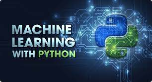

Cursos Online
|
| Nível |
Nome do Curso |
Descrição |
Carga Horária |
Pré-Requisitos |
Link |
Imagem |
| Intermediario |
Desenvolvimento Web com Python |
Aprenda a criar sites e aplicações Web com Python e Django. |
60 horas |
Noçoes básicas de Python |
Clique aqui |
|
| Data Science com R |
Domine a analise de dados com R e crie visualizações incriveis. |
40 horas |
Noçoes básicas de Estatica |
Clique aqui |
 |
| Avançado |
Machine Learning com Python |
Aprenda os principais algoritomos de Machine Learning e como aplica-los em seus projetos. |
50 horas |
Noçoes básicas de Python e matematica linear |
Clique aqui |
 |